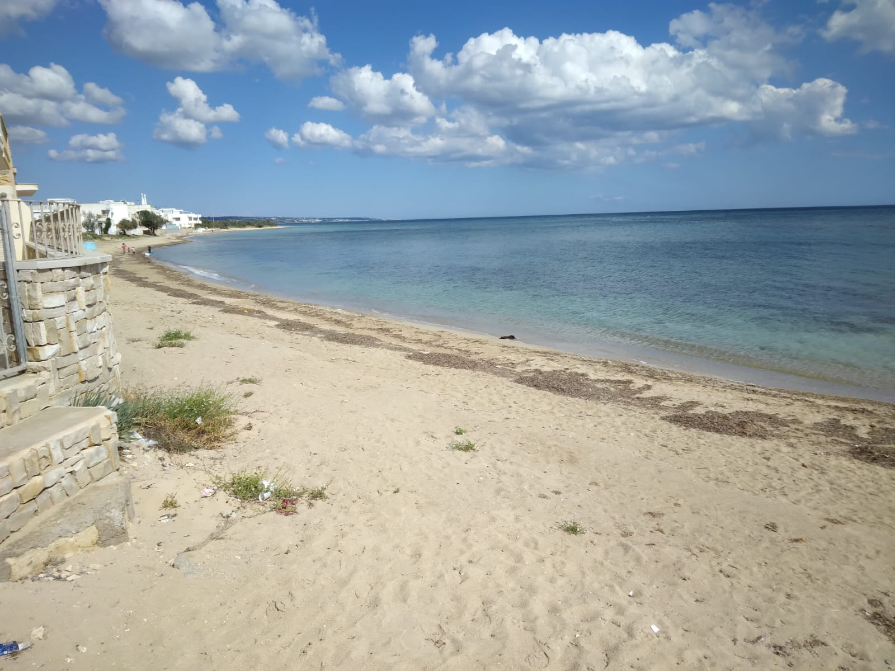
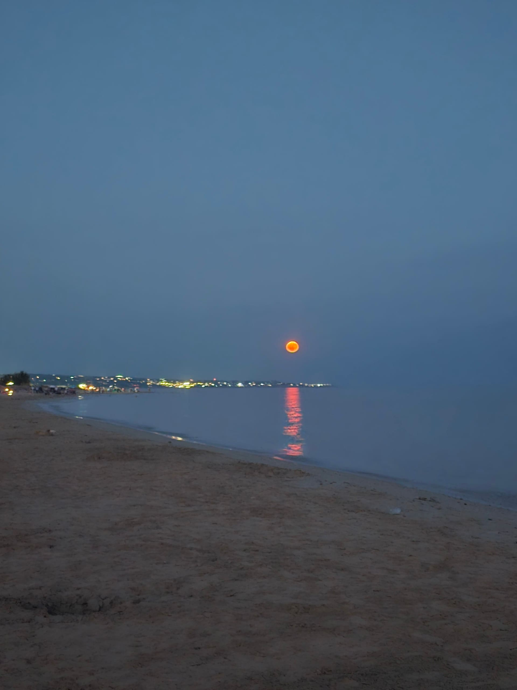
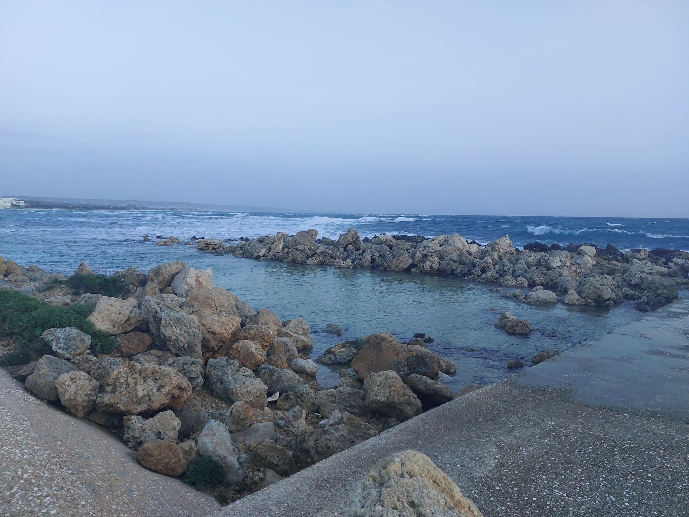
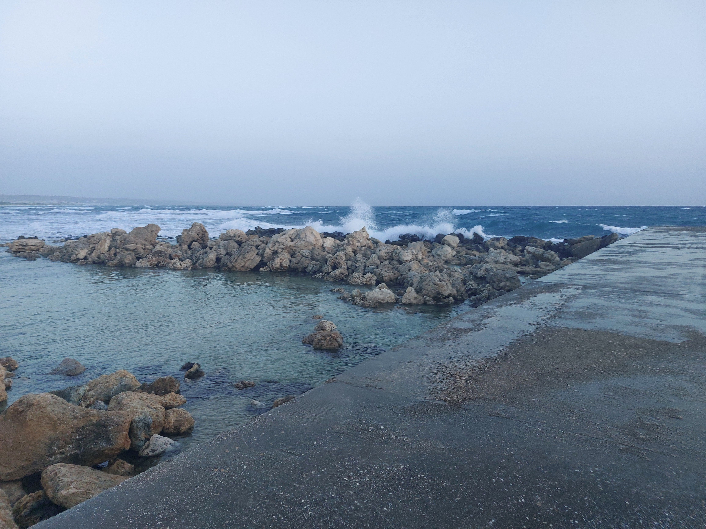
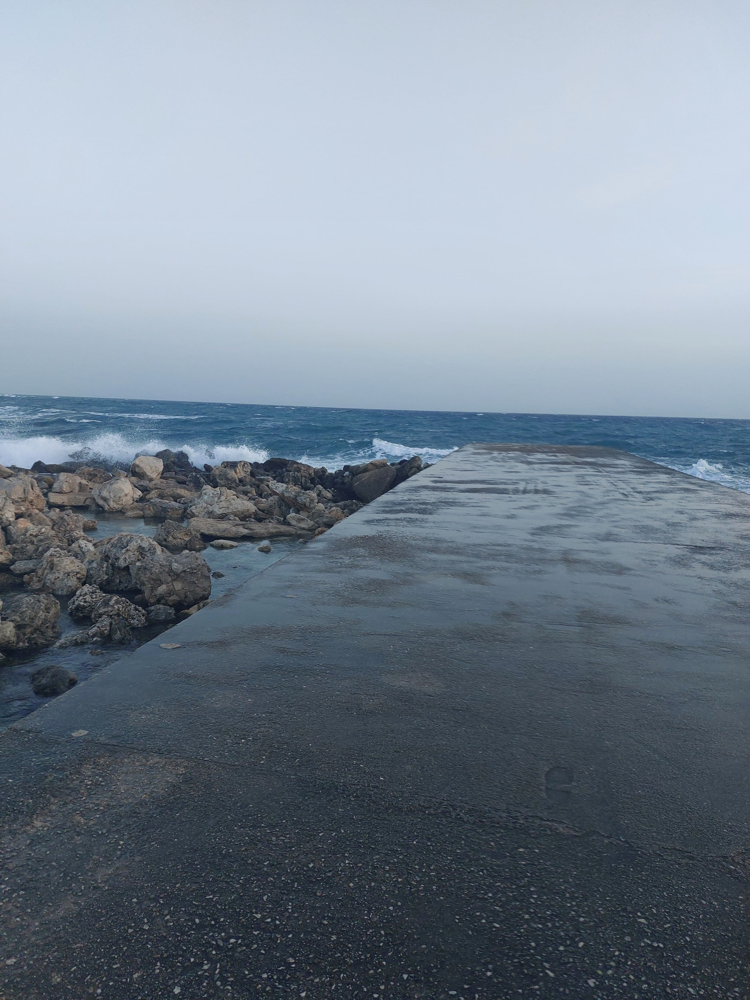
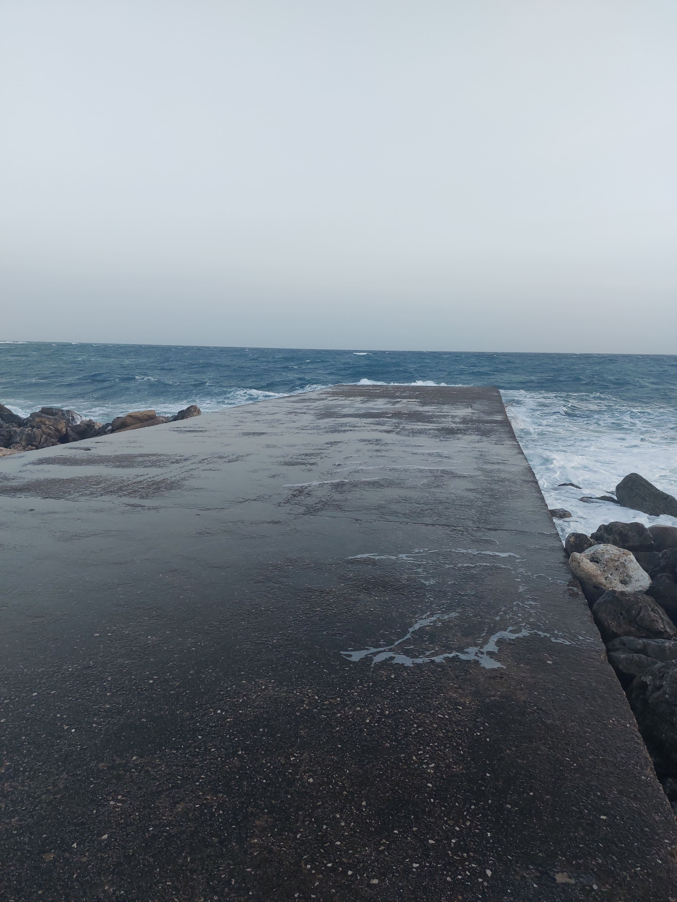

Torre Pali
La Perla del Salento tra Mare Cristallino e Storia Millenaria




Benvenuti a Torre Pali
Torre Pali è una piccola frazione marina di Salve, situata nella punta più meridionale del Salento, in provincia di Lecce. Questa località balneare rappresenta una delle destinazioni più affascinanti e autentiche della Puglia, dove il mare cristallino incontra la tradizione millenaria del Sud Italia.
Con le sue spiagge premiate dalla Bandiera Blu per la qualità delle acque e dei servizi, Torre Pali è diventata negli ultimi anni una meta ambita da famiglie, coppie e giovani che cercano un'esperienza di vacanza autentica, lontana dal turismo di massa ma ricca di fascino e bellezze naturali.
Bandiera Blu
Acque cristalline premiate per qualità e pulizia
Storia
Torre costiera del XVI secolo
Gastronomia
Cucina salentina autentica
Dove Si Trova
Torre Pali si affaccia sul Mar Ionio, a soli 70 km da Lecce e 120 km dall'aeroporto di Brindisi. La sua posizione strategica la rende facilmente raggiungibile e al tempo stesso un punto di partenza ideale per esplorare tutto il Salento: da Gallipoli a Santa Maria di Leuca, dalle grotte di Castro alle spiagge di Pescoluse.
Le Spiagge
Le spiagge di Torre Pali sono caratterizzate da sabbia finissima e dorata, fondali bassi e digradanti perfetti per le famiglie con bambini, e un mare dai colori spettacolari che vanno dal turchese all'azzurro intenso. La costa si estende per diversi chilometri, alternando spiagge libere attrezzate con ombrelloni e lettini a tratti di costa selvaggia dove la natura domina incontrastata.
Il litorale è protetto da correnti e venti grazie alla sua conformazione naturale, rendendo il mare quasi sempre calmo e ideale per nuotate rilassanti. La bassa profondità per molti metri dalla riva permette anche ai più piccoli di giocare in sicurezza nell'acqua cristallina.
Visibilità fino a 10 metri
Ideale per bambini
Windsurf, SUP, kayak
Sul mare Ionio
La Torre di Guardia
Il nome Torre Pali deriva dall'antica torre di avvistamento costruita nel XVI secolo come parte del sistema difensivo costiero contro le incursioni dei pirati saraceni. La torre, ancora visibile e ben conservata, rappresenta un importante testimonianza storica e un simbolo della località.
Queste torri costiere, costruite durante il dominio spagnolo del Regno di Napoli, formavano una rete di comunicazione visiva lungo tutta la costa pugliese. Quando venivano avvistati pirati all'orizzonte, i guardiani accendevano fuochi sulla sommità della torre per allertare le torri vicine e l'entroterra.
L'Isola della Fanciulla
A pochi metri dalla costa di Torre Pali emerge dall'acqua cristallina un piccolo isolotto roccioso conosciuto come Isola della Fanciulla (o Isola della Fanciulla di Torre Pali). Questo scoglio, raggiungibile facilmente a nuoto o con un breve tragitto in canoa, è uno dei simboli più fotografati e amati della località.
La Leggenda dell'Isola
Secondo un'antica leggenda salentina, l'isola prende il nome da una giovane fanciulla che, innamorata di un pescatore, attendeva ogni giorno il suo ritorno dal mare su quello scoglio. Un giorno il giovane non fece più ritorno, disperso durante una tempesta. La fanciulla continuò ad attendere sullo scoglio fino a quando, consumata dal dolore e dalla disperazione, si trasformè in pietra, diventando parte dell'isola stessa.
La leggenda vuole che nelle notti di luna piena si possa ancora vedere la sagoma della fanciulla che scruta l'orizzonte in attesa del suo amato. Questa storia romantica e malinconica ha reso l'isola un luogo simbolico per gli innamorati, che spesso la raggiungono a nuoto per scattare fotografie e lasciare piccoli ricordi.
Visita all'Isola
L'Isola della Fanciulla dista circa 100-150 metri dalla riva ed è facilmente raggiungibile:
5-10 minuti, mare calmo e basso
Noleggio disponibile sulla spiaggia
Pesci colorati e fondali rocciosi
Panorama mozzafiato al tramonto
L'isolotto è costituito da rocce calcaree ed è circondato da fondali ricchi di vita marina. Per gli appassionati di snorkeling, l'area intorno all'isola offre l'opportunità di osservare piccoli pesci mediterranei, ricci di mare, stelle marine e una ricca vegetazione sottomarina.
Consigli per la Visita
? Migliore Orario: Mattina presto o tardo pomeriggio per evitare il sole forte
? Attrezzatura: Maschera e pinne per ammirare i fondali
? Sicurezza: Nuotare solo con mare calmo, in gruppo o con salvagente
? Fotografia: Il tramonto dall'isola offre scatti indimenticabili
? Rispetto: Non lasciare rifiuti e rispettare l'ambiente marino
Il Molo di Torre Pali
Uno dei luoghi più affascinanti e fotografati di Torre Pali è il suo caratteristico molo in pietra, una piccola scogliera che si protende nel mare cristallino. Questo angolo suggestivo rappresenta il punto d'incontro perfetto tra il relax diurno e i tramonti mozzafiato sul Mar Ionio.




Tuffi e Bagni dalla Scogliera
Il molo di Torre Pali non è solo un luogo panoramico, ma anche una meta privilegiata per gli amanti dei tuffi. Le rocce calcaree, levigate dal tempo e dal mare, offrono diversi punti da cui lanciarsi in acqua, con altezze che variano da 1 a 4 metri, adatte sia ai principianti che ai più esperti.
L'acqua profonda e cristallina ai piedi della scogliera, con fondali che raggiungono rapidamente i 3-5 metri, garantisce tuffi sicuri e rinfrescanti. Durante le giornate estive, il molo diventa un luogo di ritrovo per giovani e famiglie che amano alternare il relax sulla sabbia con l'emozione di lanciarsi in mare dalle rocce.
Fondali rocciosi ricchi di vita marina
Acqua profonda e cristallina
Spot ideale per la pesca con canna
Spazio perfetto per prendere il sole
I Tramonti più Belli del Salento
Se c'è un momento magico da vivere a Torre Pali, è sicuramente il tramonto dal molo. Ogni sera, il sole scende lentamente sull'orizzonte del Mar Ionio, tingendo il cielo di sfumature che vanno dall'arancio al rosso fuoco, dal viola al rosa intenso. La posizione del molo, protesa verso il mare, offre una vista panoramica a 180 gradi che rende questo spettacolo della natura ancora più emozionante.
Durante l'ora del tramonto, il molo diventa il punto di ritrovo preferito per coppie romantiche, fotografi in cerca dello scatto perfetto e famiglie che vogliono concludere la giornata di mare con un'esperienza indimenticabile. Il riflesso dei colori del tramonto sull'acqua calma crea un'atmosfera quasi surreale, rendendo ogni sera unica e speciale.
Consigli per Vivere al Meglio il Molo
? Orario Migliore: Al tramonto (ore 19:00-20:30 in estate) per i colori spettacolari
? Calzature: Scarpette da scoglio consigliate per camminare sulle rocce
? Attrezzatura: Porta maschera e pinne per esplorare i fondali
? Fotografia: Arriva 30 minuti prima del tramonto per trovare la posizione migliore
? Sicurezza: Fai attenzione alle rocce scivolose e non tuffarti se il mare è mosso
? Protezione: Ricorda la crema solare, le rocce riflettono molto il sole
Insider Tip
Il periodo migliore per godersi il molo è da maggio a ottobre, quando il mare è calmo e le temperature permettono di fare il bagno fino a tarda sera. Per evitare la folla, visita il molo la mattina presto (7:00-9:00) quando il mare è liscio come l'olio e potrai goderti tuffi e snorkeling in tranquillità assoluta.
Durante le serate estive, il molo è anche punto di partenza per suggestive escursioni in kayak al chiaro di luna, organizzate da alcuni operatori locali. Un'esperienza romantica e avventurosa allo stesso tempo!
Come Arrivare a Torre Pali
Torre Pali è facilmente raggiungibile da diverse località pugliesi e dai principali hub di trasporto della regione.
In Aereo
L'aeroporto più vicino è quello di Brindisi-Casale (BDS), situato a circa 120 km da Torre Pali (1 ora e 30 minuti in auto). L'aeroporto di Brindisi offre collegamenti nazionali e internazionali con le principali città europee, soprattutto durante la stagione estiva.
In alternativa, l'aeroporto di Bari-Palese (BRI) dista circa 220 km (2 ore e 30 minuti in auto) ed è ben collegato con voli nazionali e internazionali tutto l'anno.
In Auto
Da Brindisi o Lecce, seguire le indicazioni per Gallipoli sulla SS101, proseguire verso sud sulla SS274 in direzione Santa Maria di Leuca e seguire le indicazioni per Torre Pali/Salve. Il percorso è ben segnalato e panoramico.
Distanze chilometriche:
è Da Lecce: 70 km (1 ora)
è Da Gallipoli: 45 km (40 minuti)
è Da Otranto: 75 km (1 ora e 10 minuti)
è Da Santa Maria di Leuca: 15 km (15 minuti)
è Da Brindisi: 120 km (1 ora e 30 minuti)
In Treno
La stazione ferroviaria più vicina è Lecce, collegata con le principali città italiane. Dalla stazione di Lecce è possibile noleggiare un'auto o prendere autobus di linea per raggiungere Torre Pali (servizio limitato, si consiglia di verificare gli orari).
In Autobus
Durante la stagione estiva, collegamenti con bus di linea collegano Lecce con Torre Pali e le principali località del basso Salento. Per informazioni sugli orari: Ferrovie del Sud Est (FSE) e Salento in Bus.
Parcheggio
Torre Pali dispone di ampi parcheggi gratuiti nelle vicinanze delle spiagge. Durante l'alta stagione (luglio-agosto) è consigliabile arrivare presto al mattino per trovare posto facilmente. Alcune zone residenziali offrono parcheggi a pagamento custoditi.
Quando Visitare Torre Pali
Torre Pali è una destinazione ideale da maggio a ottobre, con il picco di affluenza turistica in luglio e agosto. Ogni periodo dell'anno offre vantaggi diversi.
Primavera (Maggio-Giugno)
Temperature miti 20-28°C, mare già balneabile, spiagge meno affollate, prezzi convenienti
Estate (Luglio-Agosto)
Temperature 28-35°C, mare caldo, eventi e vita notturna, massima animazione turistica
Autunno (Settembre-Ottobre)
Temperature piacevoli 22-28°C, mare ancora caldo, tranquillità, ideale per coppie
Clima e Temperature
Torre Pali gode di un clima mediterraneo con estati calde e secche, inverni miti e piovosi. La temperatura dell'acqua raggiunge i 25-27°C in luglio e agosto, rimanendo piacevole (22-24°C) anche a settembre e ottobre.
Aria 26°C è Mare 23°C è Ideale per famiglie
Aria 30-35°C è Mare 26-27°C è Alta stagione
Aria 27°C è Mare 25°C è Bassa stagione ideale
Aria 22°C è Mare 22°C è Tranquillo e rilassante
Consiglio Insider
Il periodo migliore per visitare Torre Pali è settembre: il mare è ancora caldo, le spiagge meno affollate, i prezzi più contenuti e il clima perfetto per esplorare il territorio senza il caldo torrido di agosto.
Cosa Vedere nei Dintorni di Torre Pali
La posizione strategica di Torre Pali la rende il punto di partenza ideale per esplorare le meraviglie del basso Salento. Ecco le destinazioni imperdibili nelle vicinanze.
A 10-20 km
Finis Terrae, faro, ville Liberty, grotte marine
Spiaggia tropicale con sabbia bianchissima
Borgo dei più belli d'Italia, centro storico medievale
Frantoi ipogei, palazzi barocchi, chiese storiche
A 30-50 km
Grotta Zinzulusa, borgo marinaro, siti archeologici
Città vecchia su isola, spiagge Baia Verde, movida
Cattedrale con mosaico pavimentale, castello aragonese
Firenze del Sud, barocco leccese, anfiteatro romano
Escursioni in Barca
Da Torre Pali e Santa Maria di Leuca partono numerose escursioni in barca per visitare le grotte marine della costa adriatica: Grotta Zinzulusa, Grotta Romanelli, Grotta del Diavolo, Grotta delle Tre Porte. Le escursioni durano 2-3 ore e permettono di ammirare faraglioni, insenature nascoste e acque cristalline raggiungibili solo via mare.
Entroterra Salentino
L'entroterra del basso Salento è costellato di masserie fortificate, frantoi ipogei, ulivi millenari e borghi autentici. Una passeggiata tra Salve, Patù, Giuliano di Lecce e Miggiano permette di scoprire la Puglia rurale, lontana dal turismo di massa, dove il tempo sembra essersi fermato.
Itinerario Consigliato (1 Giorno)
Mattina: Relax in spiaggia a Torre Pali e nuotata all'Isola della Fanciulla
Pranzo: Ristorante di pesce fresco sul lungomare
Pomeriggio: Visita a Santa Maria di Leuca (faro, basilica, passeggiata lungomare)
Tramonto: Aperitivo con vista a Santa Maria di Leuca
Cena: Cucina tipica salentina in un borgo dell'entroterra (Specchia o Presicce)
Servizi e Informazioni Pratiche
Torre Pali è una località turistica ben organizzata con tutti i servizi necessari per una vacanza confortevole.
Servizi Essenziali
Supermercati aperti tutti i giorni, anche la sera
Farmacia a Salve (3 km) e Torre Vado (2 km)
Ospedale più vicino a Tricase (25 km)
Sportelli bancomat a Torre Pali e Salve
Stazioni di servizio sulla strada per Salve
Bici, scooter, auto, attrezzatura mare
Servizi Balneari
Le spiagge di Torre Pali offrono sia tratti liberi che stabilimenti balneari attrezzati con ombrelloni, lettini, bar, ristoranti, docce, servizi igienici e assistenza bagnanti. Molti lidi organizzano attività sportive, corsi di acquagym, animazione per bambini e serate musicali.
Connettività
Torre Pali è ben coperta dalla rete mobile 4G/5G. La maggior parte di bar, ristoranti e stabilimenti balneari offre Wi-Fi gratuito ai clienti.
Numeri Utili
? Emergenze: 112 (numero unico emergenze)
? Pronto Soccorso: 118
? Carabinieri: 112
? Polizia: 113
? Vigili del Fuoco: 115
? Guardia Costiera: 1530
? Guardia Medica: disponibile nei mesi estivi
Gastronomia e Tradizioni
Torre Pali offre numerosi ristoranti, trattorie e pizzerie dove gustare i piatti tipici della cucina salentina: dalle orecchiette alle cozze alla tarantina, dal pesce freschissimo ai dolci tradizionali come il pasticciotto leccese.
Il mercato del pesce locale permette di acquistare direttamente dai pescatori il pescato del giorno, mentre i produttori locali offrono olio extravergine d'oliva, vino primitivo e verdure biologiche a km zero.
Eventi e Vita Notturna
Durante l'estate, Torre Pali si anima con sagre, concerti sulla spiaggia, serate danzanti e eventi culturali. La vicinanza a località più grandi come Gallipoli e Lecce permette di combinare il relax diurno in spiaggia con la vivace vita notturna salentina.
Cosa Fare a Torre Pali
Percorsi panoramici sulla costa
Visita Salve, Presicce, Specchia
Passeggiate tra ulivi secolari
Degustazioni vino e olio locale
Vivi Torre Pali
Scopri le nostre case vacanze a pochi passi dal mare e dall'Isola della Fanciulla
Vedi Appartamenti Contattaci